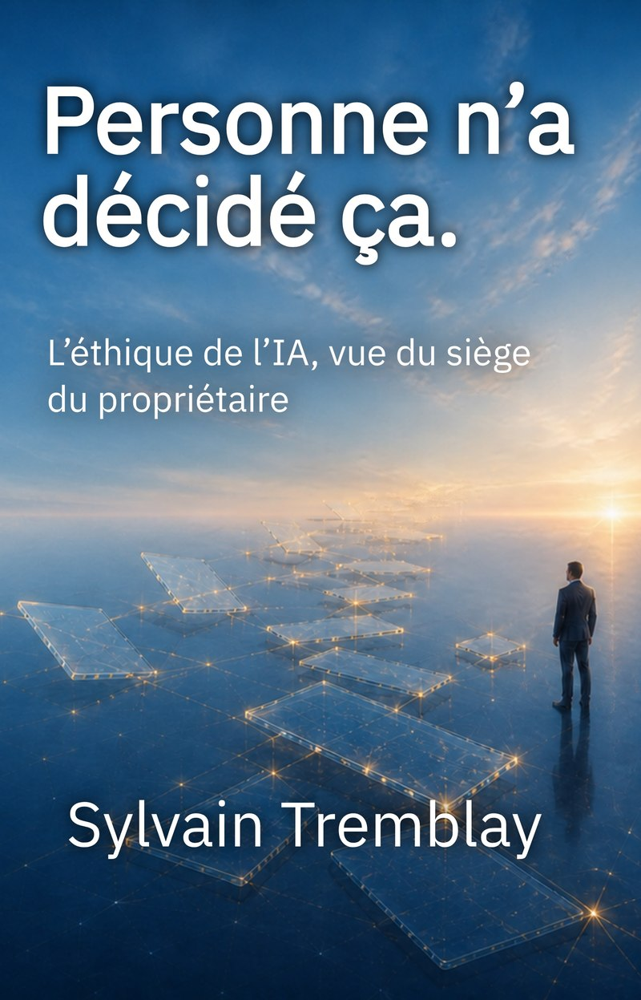

L'éthique de l'IA, vue du siège du propriétaire
Rien n'a été piraté, aucun réglage n'était erroné, personne n'a voulu nuire, et quelqu'un en paie quand même le prix. Ce livre traite de quatre situations ordinaires où l'IA, dans une entreprise, produit un tort que personne n'a décidé. Elles se produisent probablement chez vous cette semaine.

Le livre part d'une question qu'on lui pose toujours à la fin d'une conférence : est-ce que ça peut se retourner contre nous ? À partir d'incidents rapportés à l'été 2026 par les organisations concernées, il montre que la peur est mal placée. Ce qui manquait n'était pas la bienveillance des systèmes, mais une limite que personne n'avait posée. Il ramène ensuite ce constat à l'échelle d'une petite entreprise, en quatre situations : un accès qu'on avait oublié posséder, un compte partagé qui rend visible ce que personne n'a choisi de montrer, un document qui persuade plus qu'il ne le devrait, des propos attribués à quelqu'un qui ne les a jamais tenus.
Il s'adresse à la personne qui répond : celle vers qui on se tourne quand quelque chose est sorti de travers et qu'il faut dire ce qu'on fait maintenant. Il est écrit du siège du propriétaire, sans prédiction, sans gabarit et sans annexe. Chaque chapitre se termine sur un engagement qui porte sur la conduite du dirigeant, formulé de façon qu'on puisse le lui rappeler. Il se lit après les autres titres, mais il peut se lire seul.
Il commence là où Les mains dans l'IA s'arrête et pose la seule question que les trois autres livres laissent de côté : non pas comment faire, quoi décider ou ce que ça donne, mais ce qui est acceptable.
Sylvain Tremblay est consultant en technologies de l'information et entrepreneur depuis plus de trente ans. Il a fondé et dirigé plusieurs entreprises, ce qui lui a donné une connaissance directe des contraintes des petites entreprises : budgets serrés, équipes réduites, décisions prises sans filet.
Depuis l'arrivée de l'IA générative, il consacre une bonne partie de son temps à la tester dans ses propres entreprises plutôt qu'à en lire les promesses. C'est de cette pratique, pas de la théorie, que viennent ses livres.
Il est l'auteur de L'IA en Action et L'écart, c'est vous. Personne n'a décidé ça. est le quatrième ouvrage de la série.
Inscrivez-vous et recevez le guide gratuit — Décider, construire, vérifier et durer avec l'IA, accompagné de la grille de décision à cinq axes et de la liste des sept erreurs les plus courantes.
Ensuite, les parutions de la maison, et rien d'autre. Une infolettre irrégulière, qui part quand il y a quelque chose à annoncer.